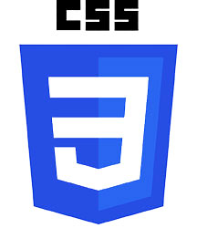
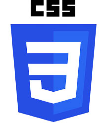

About / Contact
CSS for Beginners
CSS
Pre Requisites
Guides
Start Your Journey
Info
About / Contact
Is used to style and lay out web pages — for example, to alter the font, color, size, and spacing of your content, split it into multiple columns, or add animations and other decorative features. This module provides a gentle beginning to your path towards CSS mastery with the basics of how it works, what the syntax looks like, and how you can start using it to add styling to HTML.
Basic familiarity with using computers, and using the Web passively (i.e. looking at it, consuming the content.)
A basic work environment set up as detailed in Installing basic software, and an understanding of how to create and manage files, as detailed in Dealing with files.
Basic familiarity with HTML, as discussed in the Introduction to HTML module..
 

This module contains the following articles, which will take you through all the basic theory of CSS, and provide opportunities for you to test out some skills.
CSS (Cascading Style Sheets) allows you to create great-looking web pages, but how does it work under the hood? This article explains what CSS is, with a simple syntax example, and also covers some key terms about the language.
In this article we will take a simple HTML document and apply CSS to it, learning some practical things about the language along the way.
Now that you have an idea about what CSS is and the basics of using it, it is time to look a little deeper into the structure of the language itself. We have already met many of the concepts discussed here; you can return to this one to recap if you find any later concepts confusing.
We have learned the basics of CSS, what it is for and how to write simple stylesheets. In this lesson we will take a look at how a browser takes CSS and HTML and turns that into a webpage.
With the things you have learned in the last few lessons you should find that you can format simple text documents using CSS, to add your own style to them. This article gives you a chance to do that.
Complete beginners start here!
HTML — Structuring the Web
CSS — Styling the Web
JavaScript — Dynamic client-side scripting
Accessibility — Make the web usable by everyone
Tools and testing
Server-side website programming
Further resources
Grab this applications: